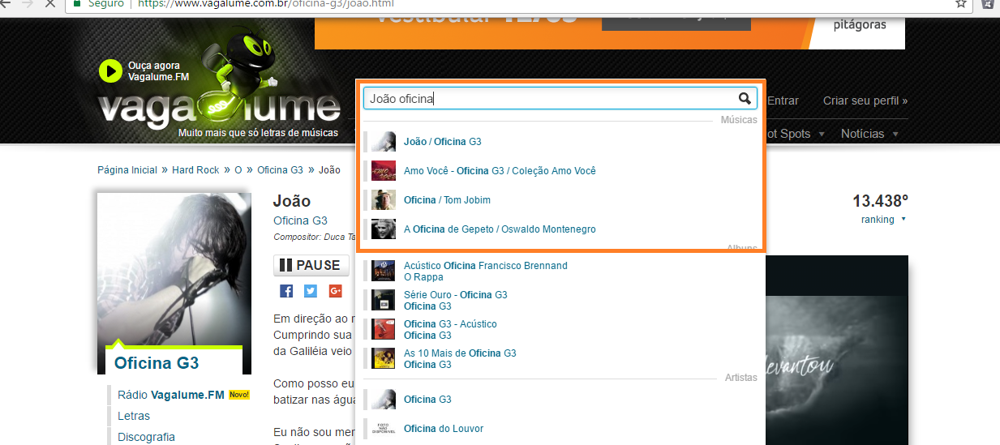
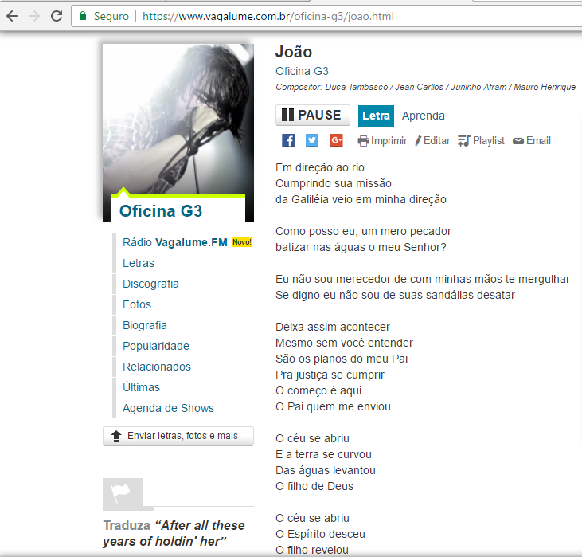
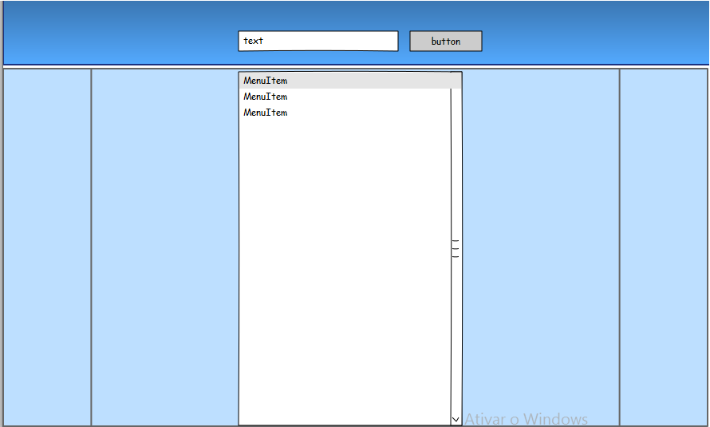
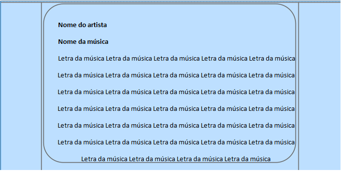
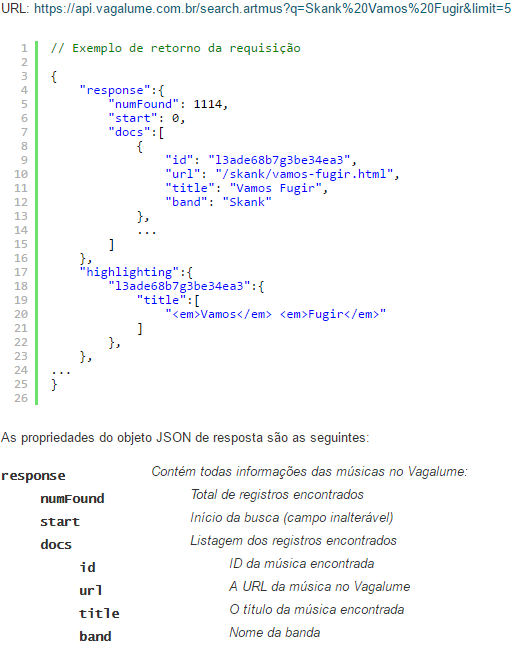

A música faz parte da vida de todos, é uma prática cultural e humana que em forma de arte possui a característica de expressar e causar sentimentos. A música não só se expressa com sons, mas também em forma poética (Letras), e a proposta do projeto é disponibilizar as letras de forma fácil e acessível.
A ideia principal é fornecer fácil acesso a letras de musicas através de uma plataforma web.
Teve como inspiração o cite vagalume.com, no projeto pretendo colocar um sistema de busca parecido de preenchimento automático para facilitar a busca (como na imagem a baixo).
E ao finalizar a busca, forneceríamos a letra (como na imagem a baixo).
A página de busca.
A página de acesso à letra.
Vou usar o sistema de busca da API do vagalume, que pede o nome da música e o nome do artista
